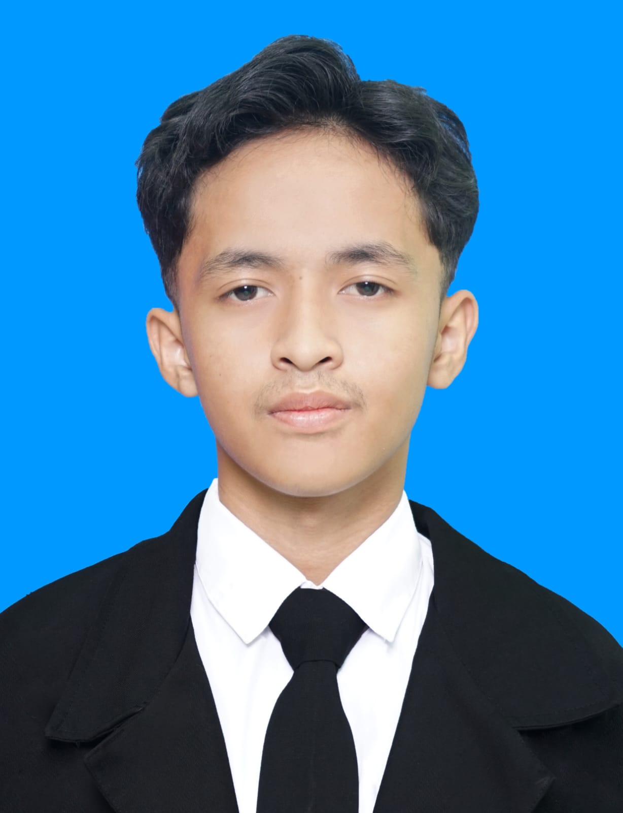

KEMAMPUAN



Alamat : Jl. Taruna Praja, Sungai Sipai, Martapura
No. HP : 085166628959
Email : zikrakasuma90@gmail.com
Instagram : @warnalayar
Saya lulusan dari SMKN 1 Banjarbaru yang punya minat besar di dunia videografi dan editing. Saya terbiasa menggunakan berbagai aplikasi seperti Adobe premiere pro, Adobe After Effects dan CapCut. Saya saat masih sekolah sering dipercaya untuk menjadi Videografer diberbagai acara sekolah. Di luar sekolah, saya juga aktif sebagai Video editor, pernah membuat beberapa video promosi, dan saat ini saya juga jadi seorang Content creator. Dan sekarang saya berkuliah di POLITEKNIK NEGERI BANJARMASIN diprodi D4 Bisnis Digital
Jurusan Desain Komunikasi Visual (DKV)
Prodi D4 Bisnis Digital